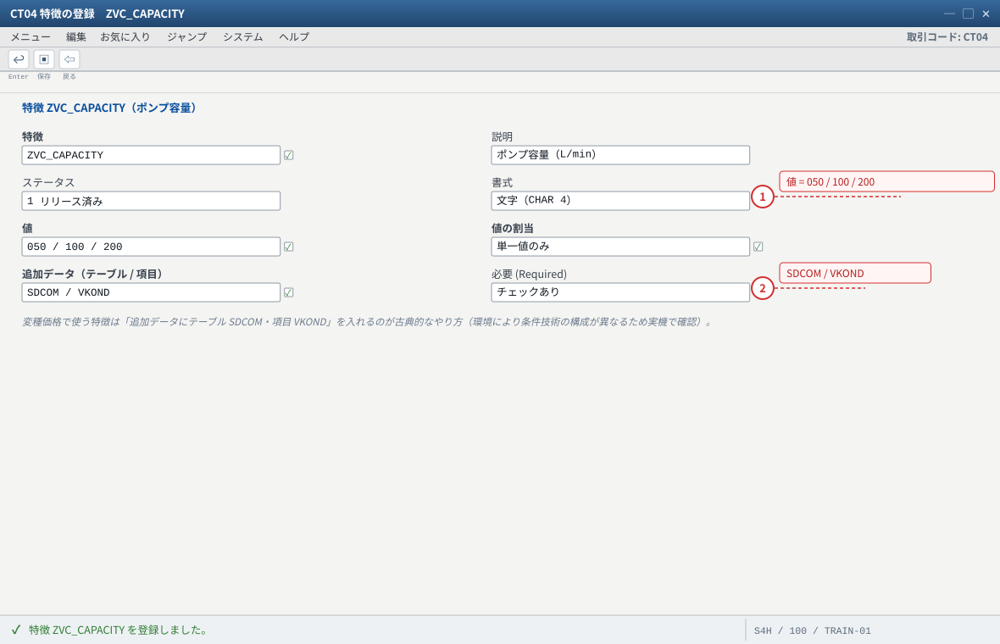
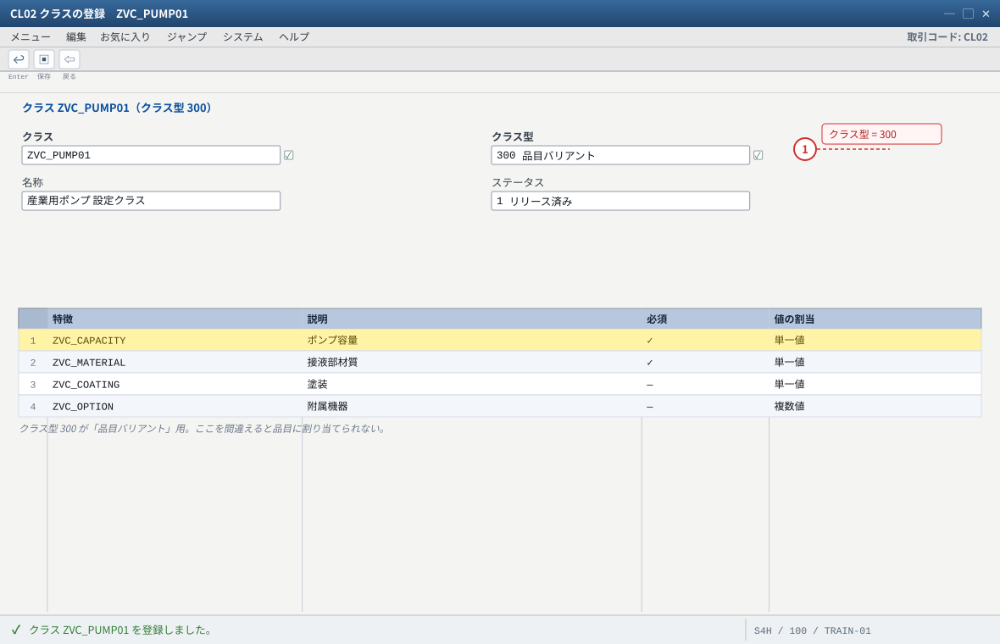
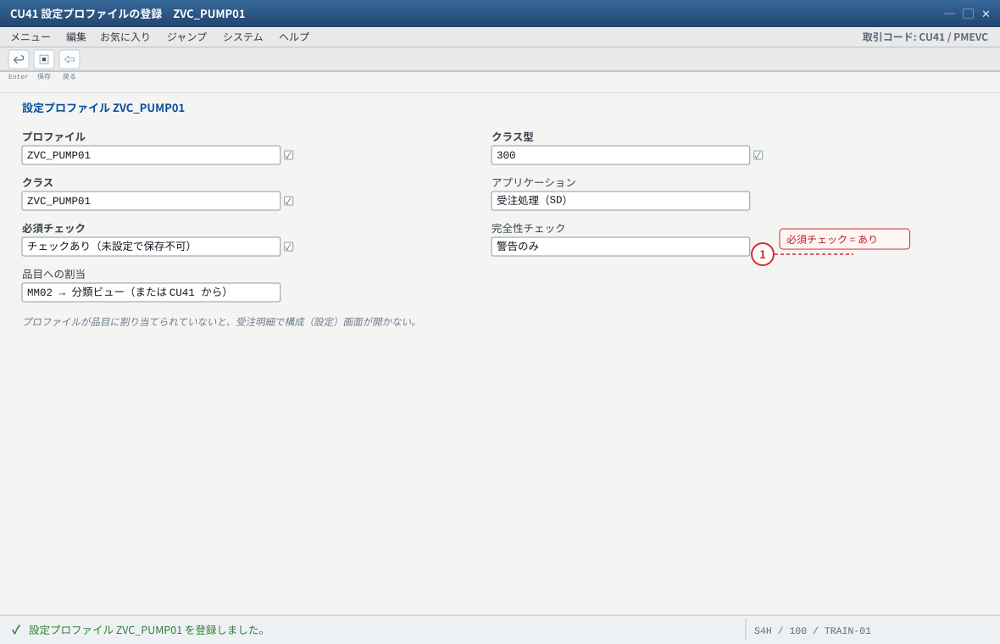
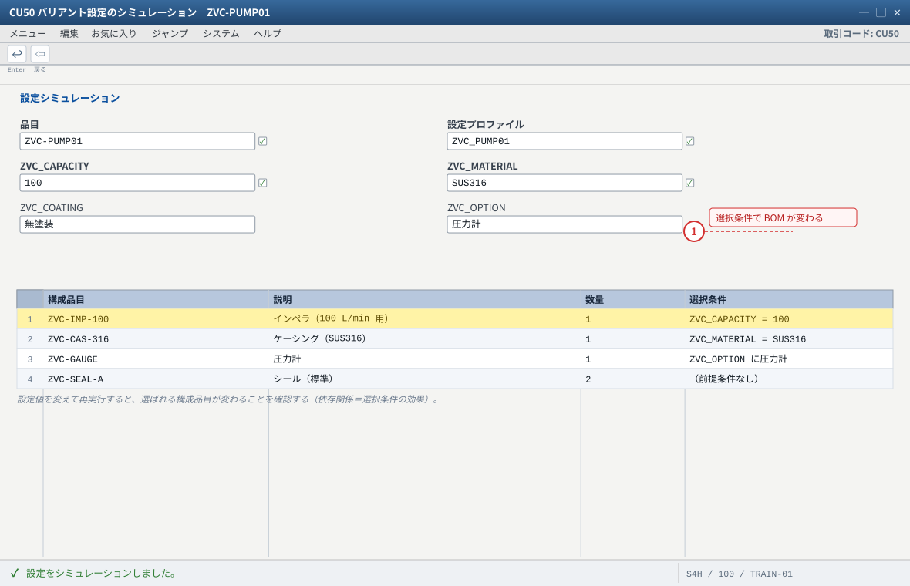
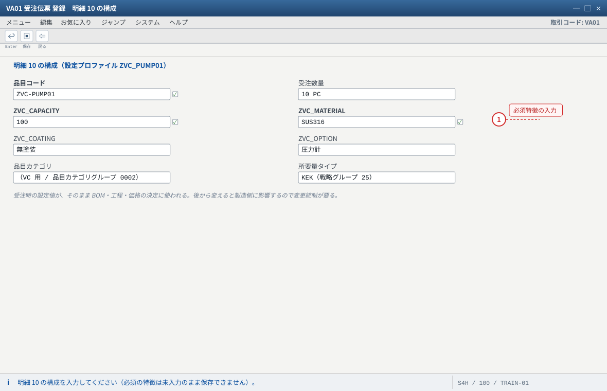
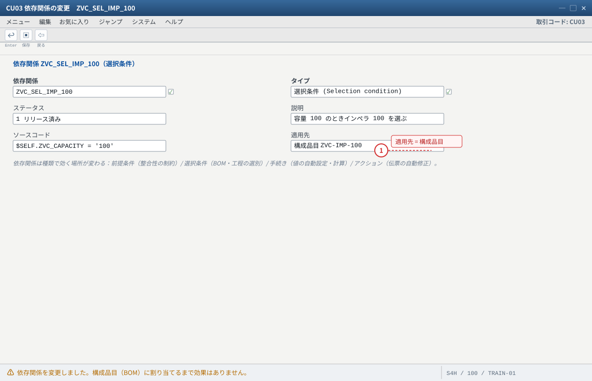

VC（バリアント設定）概観 — 生産形態ではなく「製品の表現方法」
关于本页的「画面イメージ」：这些图是按 SAP GUI 标准布局重绘的示意图，不是实机截图。字段名、字段顺序、按钮位置会因版本与自定义而不同，请以自系统的画面为准（各 STEP 的「自系统での確認方法」里写了确认用的 T-code 与表）。若是想换成实机截图，把同名
.png 放进 assets/gui/ 后执行 python3 tools/swap_gui_images.py <site> --apply 即可一键替换。最初に押さえる 3 点
① VC は「1 つの品目（
② S/4HANA では AVC（Advanced Variant Configuration）が現行のツールチェーンで、モデリングは
③ このページは「知っておくべき地図」までです。VC のフル実習（特徴設計・依存関係の作り込み・価格モデル）は別教材の領域で、本站では扱いません。
KMAT）で無数のバリエーションを表現する」仕組みであり、生産形態そのものではありません。
库存区分（E / Q）と計画戦略（20 / 25 / 82）は別途決めます。② S/4HANA では AVC（Advanced Variant Configuration）が現行のツールチェーンで、モデリングは
PMEVC（従来の CU41 系画面も併存）。③ このページは「知っておくべき地図」までです。VC のフル実習（特徴設計・依存関係の作り込み・価格モデル）は別教材の領域で、本站では扱いません。
1. VC の構成要素（この 6 つを押さえれば全体像が見える）
| 要素 | 何をするもの | 主な T-code | 覚え方 |
|---|---|---|---|
| 特徴（Characteristics） | 「選べる仕様」を定義する（色・容量・口径…）。値と、追加データ（テーブル/項目）を持てる | CT04 | 質問と選択肢 |
| クラス（Class） | 特徴をまとめる器。品目（KMAT）に割り当てる（クラス型 300＝品目変種） | CL02（CL01/CL03） | 質問票 |
設定可能品目（KMAT） | 設定される「親」品目。品目カテゴリグループ 0002（VC 標準。SET 処理では 0004） | MM01 | 1 品目で無限のバリエーション |
| 依存関係（Object dependencies） | 設定のロジック。前提条件・選択条件・手続き・アクションで、選べる値・BOM の構成品目・作業手順の工程・価格の加算を制御する | CU01〜CU03 | VC の心臓。ここが設計の腕の見せどころ |
| 設定プロファイル（Configuration profile） | どのクラス/特徴をどう使うか、画面と必須チェックをまとめる。品目に割り当てる | CU41（S/4HANA は PMEVC） | 設定の入り口 |
| シミュレーション | 設定を試す（BOM 展開や価格がどうなるか確認） | CU50（CU51/CU52） | 設計の単体テスト |
モデリングの流れ（概要）
① CT04 で特徴を作る（値、必須/複数選択、追加データ）
② CL02 でクラス（クラス型 300）を作り、特徴を割り当てる
③ MM01 で KMAT（設定可能品目）を作る：
・品目タイプ KMAT ／ 品目カテゴリグループ 0002
・基本データの「設定可能（Configurable）」インジケータ
・MRP1：MRP タイプ PD・ロットサイズ EX ／ MRP3：戦略グループ 25（VC の受注生産）
・MRP4：個別/包括所要量（受注在庫にする場合）
④ クラスを品目に割り当て → 設定プロファイル（CU41 / PMEVC）を品目に割り当て
⑤ CU50（または受注の構成画面）で動作確認 → 依存関係（CU01〜CU03）で BOM・工程・価格を制御
⑥ 受注（VA01）で明細に設定値を入力 → MRP → 指図（設定値が伝搬）→ 製造 → 出荷 → 請求
よくある勘違い
・「VC は生産形態」→ 違います。VC＋戦略
・「
25（受注生産）、VC＋戦略 82（受注組立／ATO）、VC＋WBS（ETO）など組合せです。・「
KMAT 自体が在庫になる」→ 原則として KMAT は在庫管理されません（構成された実体・構成品目で管理）。完成品を在庫したいなら、別品目・別ロジックを検討します。
- 1 選べる値と、必須かどうかがここで決まる
- 2 変種価格で使うなら追加データを設定
自システムでの確認：AVC（S/4HANA）では PMEVC のモデリング環境でも同じ特徴を扱います。モデリング環境の選択は業務と合意してください。

- 1 クラス型 300 ＝ 品目バリアント用
自システムでの確認：クラス型の名称・番号は環境で変わります（CL02 の F4）。品目への割当は MM02 の分類ビュー、または CU41/PMEVC から。

- 1 必須チェックの強さ＝受注時にどこまで縛るか
自システムでの確認：S/4HANA の AVC では PMEVC が統合モデリング環境です。従来の CU41 系画面も使えますが、どちらを使うかはプロジェクトで決めてください。
2. 他形態との組合せ（どこに VC が乗るか）
| 組合せ | 計画戦略 / 所要量タイプ | 库存区分 | 場面 |
|---|---|---|---|
| VC × MTO（もっとも一般的） | 戦略 25 → KEK → 所要量クラス 046 系 | E（受注在庫） | 得意先が仕様を選ぶ受注生産品（産業機械・エレベータ等） |
| VC × ATO（受注組立） | 戦略 82（組立処理、所要量クラス 201・指図タイプ PP04） | E または 自由在庫＋指図 | 受注した瞬間に指図を作り、短納期で組む |
| VC × ETO | ETO 用の戦略（Cloud は E2）＋ WBS 割当 | Q（プロジェクト在庫） | 案件ごとに設計し、仕様選択もある Cloud では「完成品受注で BOM を展開したい」場合に E2 を使わない選択もある（要件次第） |
| VC × 見込生産 | 戦略 10/20/40 系＋ PIR | 自由在庫 | バリエーション展開を予測でつくるケース（設計は要検討） |
Cloud のスコープアイテム：IYT（受注生産 ＋ バリアント設定）、7DM（アドバンスド社内販売 ＋ MTO ＋ VC）。VC は「構成エンジン」なので、在庫区分・戦略はスコープアイテム側の設計で決まります。
3. 受注〜製造での設定値の流れ（VC を MTO と組んだ場合）
1
受注（VA01）で明細に設定値を入力構成画面（設定プロファイル）で特徴値を選ぶ。価格は変種価格で加算されることがある
2
設定値 → BOM の選択（スーパー BOM ＋ 選択条件）選んだ値に応じて構成品目が決まる。作業手順の工程も依存関係で選別される
3
需要 → MRP（戦略 25 なら KEK）→ 計画手配 → 指図受注明細（E）または WBS（Q）に帰属。指図に設定値（構成）が引き継がれる
4
製造（部品は設定に従って選別済み）→ 入庫 → 出荷 → 請求入出庫・出荷・請求は MTO/ETO と同じ道具立て（在庫区分だけ E / Q で違う）
確認のしかた（実機での勘所）
① 受注明細で 設定（構成）が入っているか、明細カテゴリが VC 用に決定されているか（
VOV4）。
② 受注明細の「構成品目（受注 BOM）」で、選ばれた部品が期待どおりか（依存関係の検証は CU50 が早い）。
③ 指図（CO03）に設定値・構成品目が反映されているか。
④ 価格：VA03 の条件画面で変種価格（加算）が出ているか。
- 1 設定値 → 構成品目が切り替わる。ここが VC の中核
自システムでの確認：BOM が切り替わらない場合は CU50 の結果 → CS03（スーパー BOM）→ CU03（選択条件）の順に追います。

- 1 必須の特徴が未入力だと保存できない（プロファイルの必須チェック）
自システムでの確認：明細カテゴリは VOV4（品目カテゴリグループ 0002 系）。受注 BOM は VA03 の明細 → 構成品目で確認します。
4. LO-VC と AVC（S/4HANA での違い）
| 観点 | LO-VC（従来） | AVC（S/4HANA） |
|---|---|---|
| 位置づけ | SAP ERP 以来の標準 VC | S/4HANA の「現行」バリアント設定プラットフォーム（設計・統合・性能を強化） |
| モデリング環境 | CU41 等の個別画面中心 | PMEVC（統合モデリング環境）。従来画面も併存するため、習得済みナレッジは活かせる |
| 移行・移行可否 | — | プロジェクトでは「LO-VC のままか AVC へ寄せるか」を要件とスキルで判断。移行時の簡素化項目（Simplification List）確認が必須 |
| 本教材の扱い | 本站は概念の地図まで。実装は「どのバージョンで、どちらのモデリング環境を使うか」を先に決めてから設計します | |
5. 典型故障（VC 版・症状から引く）
| # | 症状 | 第一嫌疑 | 確認手顺 |
|---|---|---|---|
| 1 | 受注で構成（設定）を入力できない／構成画面が出ない | 品目が設定可能でない（KMAT でない・設定可能インジケータなし・品目カテゴリグループが 0002 でない・設定プロファイル未割当） | MM03 基本データ/販売組織2 → CU41/PMEVC のプロファイル割当 → VOV4 の明細カテゴリ |
| 2 | 設定したのに構成品目（部品）が変わらない | 選択条件・前提条件の誤り、スーパー BOM の代替/優先度、BOM 有効日 | CU50（シミュレーション）→ CS03（スーパー BOM）→ CU03（依存関係） |
| 3 | 指図に設定値が反映されない | 指図作成のタイミング・再展開漏れ、戦略/所要量タイプの不整合 | CO03 の構成 → 「構成品目の再展開」→ 戦略グループ（25 等）を確認 |
| 4 | 変種価格（加算）が出ない | 条件タイプ VA00 と計算手続、特徴の追加データ（テーブル SDCOM / 項目 VKOND）、条件レコードのキー | VA03 の条件 → V/06（条件タイプ）→ V/08（計算手続）→ VK11（条件レコード） |
| 5 | 設定の必須項目がチェックされない／されすぎる | 設定プロファイルの「必須」「完全性」設定 | CU41/PMEVC のプロファイル設定と、CU50 のチェック動作 |
| 6 | 設定可能品目の在庫が見えない／在庫を持てない | KMAT は在庫管理されない（原則） | 構成品目と、製造された実体の管理方法（別品目 or 製造指図）を設計で決める |
| 7 | 受注後に設定を変えたら製造が混乱 | 変更の統制（設定値の変更と指図の再展開） | 変更の業務ルールを決める（ロック・変更後の再展開・再計画） |

- 1 構成品目への割当を忘れると「何も変わらない」
自システムでの確認：式の文法・使用可能な属性は AVC で拡張されています。必ず CU50 で結果を確認してから本番投入してください。
6. 学習の導線（VC を本格的に学ぶなら）
| 段階 | 学ぶこと | 素材 |
|---|---|---|
| 1 基礎 | 特徴・クラス・KMAT・設定プロファイルの作り方、CU50 での確認 | SAP Help（AVC）、SAP PRESS の AVC/LO-VC 解説、各社トレーニング |
| 2 依存関係 | 前提条件・選択条件・手続き・アクションの構文と適用先（BOM・工程・価格） | varconf の Object dependencies リファレンス等 |
| 3 価格 | 変種価格（VA00）、条件レコードのキー、計算手続との組み合わせ | varconf の VC Pricing ガイド、SAP Help |
| 4 形態との組合せ | VC × 戦略 25 / 82 / ETO、Cloud（IYT/7DM） | 本站の 横断比较 ＋ 各实训站 |
7. 出典
- SAP Help（S/4HANA On-Premise）Advanced Variant Configuration：AVC の位置づけとツールセット。help.sap.com/docs/SAP_S4HANA_ON-PREMISE/36802406aebb4b96b1598246e1d316ee/76276945f5d24a119ff4aeaca6ded355.html
- SAP PRESS blog What Is SAP AVC and How Does It Compare to LO-VC?／SAPinsider Part 1: Understanding SAP Variant Configuration – LO-VC vs AVC：従来 VC と AVC の対比。
- varconf.com：Make-to-Order with SAP VC（品目カテゴリグループ
0002/0004、戦略25→KEK→ 所要量クラス046、CU50/PMEVC）、VC Object Dependencies、VC Pricing。 - SAP Community：VC 品目マスタの必須設定（品目タイプ
KMAT・品目カテゴリグループ0002/0004・戦略グループ25・MRP タイプPD・個別/包括所要量1）、変種価格（特徴の追加データSDCOM-VKONDと条件タイプVA00）。 - SAP Help（Cloud）販売伝票の企業ポートフォリオおよびプロジェクト管理／スコープアイテム
IYT・7DM：VC と ETO/MTO の組合せ。
範囲の明示
本ページの値・T-code は「一般的な標準の使い方」です。VC はモデリングの設計判断（依存関係の作り方）が成果を決める領域で、手顺の暗記では戦えません。
実装に入る前に、① バージョンと AVC/LO-VC の選択 ② 特徴設計（誰がどの粒度で選ぶか）③ 価格モデル を業務と合意してください。